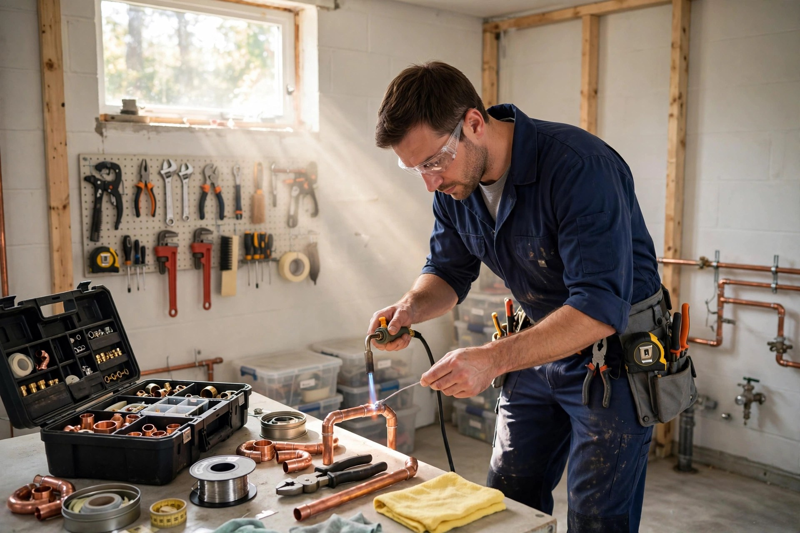
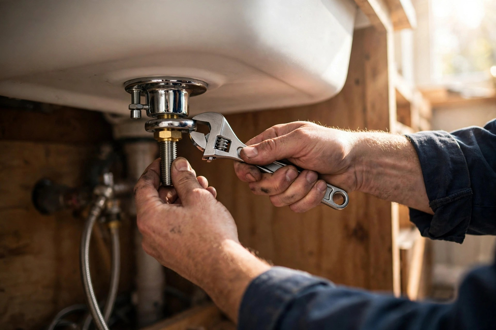
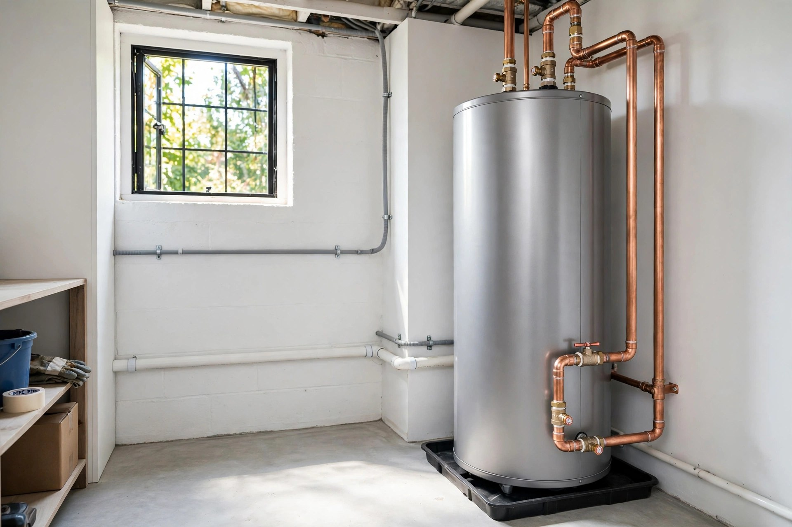
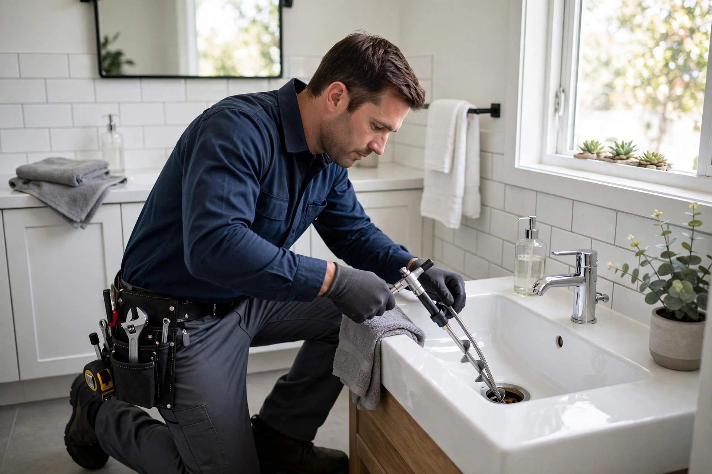

Plomberie résidentielle
Installation, réparation et entretien pour votre maison — du robinet au drain principal.

Saint-Charles-Borromée, Québec · Plomberie résidentielle et commerciale
Réparation de fuites, tuyauterie, conduites d'eau et débouchage — un travail propre, expliqué clairement, fait dans les règles de l'art.
Ce que nous faisons
Installation, réparation et entretien pour votre maison — du robinet au drain principal.
Services de plomberie pour commerces et immeubles — fiables et selon les normes.
Détection et réparation de fuites d'eau et de tuyaux, pour éviter les dégâts coûteux.
Installation et réparation de conduites d'eau et de tuyauterie — des résultats durables.
Toilettes et drains débouchés efficacement — réparation et dépannage au besoin.
Installation et remplacement de chauffe-eau — pour une eau chaude fiable.

Pourquoi nous choisir
Un plombier d'ici, au cœur de Saint-Charles-Borromée : des problèmes de plomberie réglés avec professionnalisme, un travail soigné et des résultats durables.
Sur le terrain


Venez nous voir
Bon à savoir
Oui — appelez-nous au (450) 759-0190 pour une fuite, un tuyau brisé ou un dégât d'eau. On se déplace à Saint-Charles-Borromée et dans les environs.
Oui — Plomberie Luc Riberdy dessert autant les maisons que les commerces et immeubles de la région.
Oui — installation et remplacement de chauffe-eau, avec une tuyauterie soignée.
À Saint-Charles-Borromée et dans les environs, en Lanaudière — appelez-nous au (450) 759-0190 pour vérifier votre secteur.
Contactez-nous